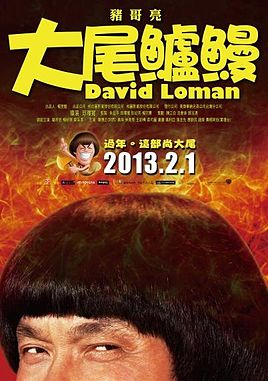
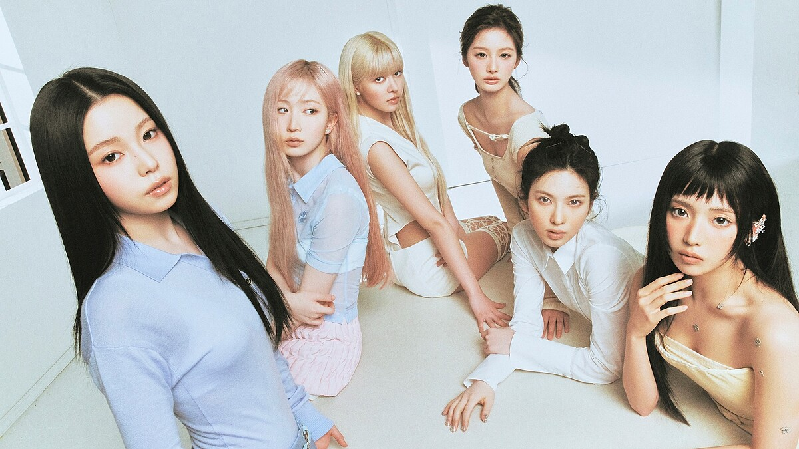

NICE TO MEET YOU
吳驊家
商設三乙
學號｜4B3J2100
PERSONAL PROFILE / 2026
歡迎來到我的小小世界
這裡收藏著我的興趣、喜歡的電影、音樂，還有一路走來的學習紀錄。一起來認識我吧！
探索我的世界 ↘01 / ABOUT ME
用幾個關鍵字，認識螢幕另一端的我。
NICE TO MEET YOU
商設三乙
平常喜歡看電影、聽歌、網購和畫畫。音樂和影像總能帶給我不同的靈感，也讓日常生活多一點有趣的色彩。
02 / MY INTERESTS
生活裡的小事，也能成為靈感的來源。
享受不同故事與角色帶來的情緒和想像。
01用喜歡的旋律陪伴日常，發現不同風格。
02看看有趣的商品、設計與生活用品。
03透過線條與色彩，把腦中的想法表現出來。
0403 / FAVORITE MOVIE
有些電影看完之後，會留下很深刻的印象。

DAVID LOMAN
《大尾鱸鰻》是我喜歡的電影之一。透過誇張又有趣的喜劇情節，帶來輕鬆歡樂的觀影感受。
04 / MUSIC IS LIFE
讓喜歡的音樂，成為生活的背景音。

NMIXX我喜歡的歌手團體是 NMIXX。她們的音樂風格有特色，舞台表演也很有魅力。
05 / MY EDUCATION
每一個階段，都是成長的一部分。
開始累積學習與生活經驗
探索興趣、培養不同能力
接觸專業課程與設計相關知識
持續學習，累積設計與創作經驗
SOUTHERN TAIWAN UNIVERSITY OF SCIENCE AND TECHNOLOGY
MY CURRENT SCHOOLTHANK YOU FOR VISITING
以上就是我的個人介紹，謝謝你的瀏覽！
回到首頁 ↑